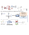
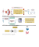
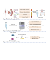

|
Khoa Le Anh Huynh I'm a PhD Candidate in Biostatistics at Virginia Commonwealth Univeristy in Virginia, where I am working with Prof. Jinze Liu and Prof. Katarzyna M Tyc. Before joining VCU, I earned my BS in Mathematics from University of Cincinnati (under the advice of Prof. Wang Xia). During my thesis work, I focused on developing expertise in generalized linear regression models and the least absolute shrinkage and selection operator (LASSO). Email / CV / Google Scholar / Github / Linkedin |
{kind=link}
ResearchMy professional interests primarily revolve around clustering, machine learning, optimization, and regression analysis. A significant portion of my research is dedicated to the development of specialized, automated tools for the preprocessing and analysis of complex, highly-multiplexed, and multimodal imaging data, particularly in single-cell studies. This includes work with advanced systems like PhenoCycler, MERSCOPE, and Xenium. In addition, I have been actively involved in harnessing the synergistic potential of methylation and fragmentomic signatures from blood-based circulating tumor DNA. By integrating these with multimodal deep-learning analyses, my work contributes to advancing early cancer detection methodologies. Please feel free to connect if you are interested in spatial omics and early cancer detection, or would like to discuss my current and previous studies. Below are the recent projects: |

|
Single-Cell and Spatially Resolved Interactomics of Tooth-Associated Keratinocytes in Periodontitis
Quinn T. Easter, Bruno Fernandes Matuck, German Beldorati Stark, Catherine L. Worth, Alexander V. Predeus, Brayon Fremin, Khoa Huynh, Vaishnavi Ranganathan, Diana Pereira, Theresa Weaver, Kathryn Miller, Paola Perez, Akira Hasuike, Zhaoxu Chen, Mandy Bush, Blake M. Warner, Janice Lee, Shannon M. Wallet, Ines Sequeira, Katarzyna M. Tyc, Jinze Liu, Kang I. Ko, Sarah A. Teichmann, Kevin M. Byrd. Accepted Nature Communication arxiv |

|
GZMK+CD8+ T cells Target a Specific Acinar Cell Type in Sjögren’s Disease
Thomas J.F. Pranzatelli, Paola Perez, Anson Ku, Bruno Matuck, Khoa Huynh, Shunsuke Sakai, Mehdi Abed, Shyh-Ing Jang, Eiko Yamada, Kalie Dominick, Zara Ahmed, Amanda Oliver, Alex Tsoi, Rachael Wasikowski, Quinn T. Easter, Alan N. Baer, Eileen Pelayo, Zohreh Khavandgar, David E. Kleiner, M. Teresa Magone, Sarthak Gupta, Christopher Lessard, A. Darise Farris, Dani Martin, Changyu Zheng, Jose Maldonado-Ortiz, Xufeng Qu, Sarah Teichmann, Daniel Barber, Alex Lam C. Tsoi, Adam Sowalsky, Katarzyna M. Tyc, Jinze Liu, Johann E. Gudjonnson, Kevin M. Byrd, Philip L.F. Johnson, John A. Chiorini, Blake M. Warner. under-revised Nature Journal arxiv | code |
|

|
Multimodal analysis of methylomics and fragmentomics in plasma cell-free DNA for multi-cancer early detection and localization
Van Thien Chi Nguyen, Trong Hieu Nguyen, Nhu Nhat Tan Doan, Thi Mong Quynh Pham, Giang Thi Huong Nguyen, Thanh Dat Nguyen, Thuy Thi Thu Tran, Duy Long Vo, Thanh Hai Phan, Thanh Xuan Jasmine, Van Chu Nguyen, Huu Thinh Nguyen, Trieu Vu Nguyen, Thi Hue Hanh Nguyen, Le Anh Khoa Huynh , Trung Hieu Tran, Quang Thong Dang, Thuy Nguyen Doan, Anh Minh Tran, Viet Hai Nguyen, Vu Tuan Anh Nguyen, Le Minh Quoc Ho, Quang Dat Tran, Thi Thu Thuy Pham, Tan Dat Ho, Bao Toan Nguyen, Thanh Nhan Vo Nguyen, Thanh Dang Nguyen, Dung Thai Bieu Phu, Boi Hoan Huu Phan, Thi Loan Vo, Thi Huong Thoang Nai, Thuy Trang Tran, My Hoang Truong, Ngan Chau Tran, Trung Kien Le, Thanh Huong Thi Tran, Minh Long Duong, Hoai Phuong Thi Bach, Van Vu Kim, The Anh Pham, Duc Huy Tran, Trinh Ngoc An Le, Truong Vinh Ngoc Pham, Minh Triet Le, Dac Ho Vo, Thi Minh Thu Tran, Minh Nguyen Nguyen, Thi Tuong Vi Van, Anh Nhu Nguyen, Thi Trang Tran, Vu Uyen Tran, Minh Phong Le, Thi Thanh Do, Thi Van Phan, Luu Hong Dang Nguyen, Duy Sinh Nguyen, Van Thinh Cao, Thanh Thuy Thi Do, Dinh Kiet Truong, Hung Sang Tang, Hoa Giang, Hoai Nghia Nguyen, Minh Duy Phan, Le Son Tran. eLife (impact factor: 8.7 | updated in 2023) paper |
|

|
Multimodal analysis of ctDNA methylation and fragmentomic profiles enhances detection of nonmetastatic colorectal cancer
Huu Thinh Nguyen*, Le Anh Khoa Huynh* , Trieu Vu Nguyen, Duc Huy Tran, Thuy Thi Thu Tran, Nguyen Duy Khang Le, Ngoc-An Trinh Le, Truong-Vinh Ngoc Pham, Minh-Triet Le, Thi Mong Quynh Pham, Trong Hieu Nguyen, Thien Chi Van Nguyen, Thanh Dat Nguyen, Bui Que Tran Nguyen, Minh-Duy Phan, Hoa Giang, Le Son Tran. Future Oncology (impact factor: 3.3 | updated in 2023) paper |
|

|
Multimodal analysis of genome-wide methylation, copy number aberrations, and end motif signatures enhances detection of early-stage breast cancer
Thi Mong Quynh Pham, Thanh Hai Phan, Thanh Xuan Jasmine, Thuy Thi Thu Tran, Le Anh Khoa Huynh, Thi Loan Vo, Thi Huong Thoang Nai, Thuy Trang Tran, My Hoang Truong, Ngan Chau Tran, Van Thien Chi Nguyen, Trong Hieu Nguyen, Thi Hue Hanh Nguyen, Nguyen Duy Khang Le, Thanh Dat Nguyen, Duy Sinh Nguyen, Dinh Kiet Truong, Thi Thanh Thuy Do, Minh-Duy Phan, Hoa Giang, Hoai-Nghia Nguyen, Le Son Tran. Frontier in Oncology (impact factor: 4.7 | updated in 2023) paper |
Awards and Recognitions
- Jacob B. and Veronica Schmitt Scholarship - 2017, 2018, 2019
- Harry S. Kieval Mathematics - 2017, 2018, 2019
- Undergraduate Research Award - 2018, 2020
Special thanks to Jon Barron for providing the HTML code that enhanced this page.